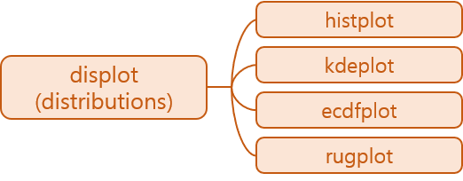

- seaborn 0.11에서 업데이트된 distribution plot을 살펴봅니다.
- distplot()이 없어진 대신 displot()이 들어왔습니다.
- matplotlib으로 만든 틀 안에 seaborn을 넣어봅니다.
1. displot()

displot()은histplot(),kdeplot(),ecdfplot(),rugplot()을 편하게 그리는 방법입니다- 편하게라는 말은 하나의 명령어(
displot())로 여러 형태를 그릴 수 있다는 뜻입니다. - 장점은 하나의 인자
kind를 바꿔주는 것 만으로 그래프의 형태를 바꿀 수 있다는 것, - 단점은 그림의 인자들이 그래프 종류마다 다르다는 점입니다.
- 그 바람에
kind외에도 다른 인자들을 많이 바꾸게 된다는 것입니다.
- 편하게라는 말은 하나의 명령어(
- 인자만 바꿔도 되는데 다른 인자도 많이 바꿔야 한다니 모순입니다.
- 조금 풀어서 설명하면,
- 기본 세팅된 그림을 그리려면 인자만 바꾸면 된다
- 그러나 여기저기 수정하려면 여러 인자를 바꿔야 한다 입니다.
displot()을 알아보는 과정은 세부 기능들을 알아보는 기능과 거의 동일합니다.- 세부 기능들을 먼저 알아보겠습니다.
2. histplot(), kdeplot(), ecdfplot()
seaborn.histplot
seaborn.kdeplot
seaborn.ecdfplot
seaborn.rugplot
2.1. plots
rugplot()은 단독으로 사용하기 어렵습니다.다른 세 plot을 하나의 figure에 담아보겠습니다.
plt.subplots()명령으로Figure와Axes를 생성하고,- seaborn plot 함수에
ax=인자를 삽입하여 그려질axes를 지정합니다.
동일 x값을 쌓아주도록
multiple="stack"을 지정합니다.1
2
3
4
5
6
7
8
9
10
11
12
13
14
15
16
17
18import matplotlib.pyplot as plt
import seaborn as sns
# Load the diamonds dataset
diamonds = sns.load_dataset("diamonds")
diamonds.head()
# plot
fig, axes = plt.subplots(ncols=3, figsize=(12,4))
sns.histplot(data=diamonds, x="carat", hue="cut", multiple="stack", ax=axes[0], legend=True)
sns.kdeplot(data=diamonds, x="carat", hue="cut", multiple="stack", ax=axes[1], legend=True)
sns.ecdfplot(data=diamonds, x="carat", hue="cut", ax=axes[2], legend=True)
axes[0].set_title("histplot")
axes[1].set_title("kdeplot")
axes[2].set_title("ecdfplot")
fig.tight_layout()
2.2. proportion
- 별도의 설정을 하지 않았는데도 y축 label이 그래프마다 다릅니다.
histplot()은Countkdeplot()은Densityecdfplot()은Proportion으로 되어 있습니다.ecdfplot()의 뜻은 empirical cumulative distribution functions 입니다.
- 위 코드에서
multiple부분을"fill"로 변경하면 비율을 그립니다. - 단위가 바뀌었지만 y축 label은 변하지 않았습니다. 주의해야 합니다.
1
2
3
4
5
6
7
8
9
10fig, axes = plt.subplots(ncols=3, figsize=(12,4))
sns.histplot(data=diamonds, x="carat", hue="cut", multiple="fill", ax=axes[0], legend=False)
sns.kdeplot(data=diamonds, x="carat", hue="cut", multiple="fill", ax=axes[1], legend=False)
sns.ecdfplot(data=diamonds, x="carat", hue="cut", ax=axes[2], legend=True)
axes[0].set_title("histplot")
axes[1].set_title("kdeplot")
axes[2].set_title("ecdfplot")
fig.tight_layout()
2.3. bivariate distribution
- x와 y축에 다른 변수를 지정하면 2변수 분포도를 그릴 수 있습니다.
ecdfplot()에는 적용되지 않습니다.- 범주형(categorical) 변수에는 적용되지 않으니 주의합니다.
1
2
3
4
5
6
7
8
9
10
11
12
13
14
15# Load the penguins dataset
penguins = sns.load_dataset("penguins")
penguins.head()
fig, axes = plt.subplots(ncols=2, figsize=(8,4))
sns.histplot(data=penguins, x="bill_depth_mm", y="body_mass_g", hue="species",
bins=20, ax=axes[0], legend=False)
sns.kdeplot(data=penguins, x="bill_depth_mm", y="body_mass_g", hue="species",
fill=True, levels=5, alpha=0.5,
ax=axes[1], legend=True)
axes[0].set_title("histplot")
axes[1].set_title("kdeplot")
fig.tight_layout()
3. displot() vs kdeplot()
- diamond 데이터셋을
displot()과kdeplot()으로 그려 비교해 보겠습니다. displot()은FacetGrid를 생성합니다.- matplotlib이 생성하는
Figure와Axes를 포함하는 객체입니다. - 따라서 matplot이
subplot으로 생성하는Axes에 담길 수 없습니다.
- matplotlib이 생성하는
displot()은 matplotlib의pyplot방식으로 사용해야 합니다.- 그림 크기는
height와aspect로 제어합니다.1
2
3
4
5
6
7
8sns.displot(
data=diamonds,
x="carat", hue="cut",
kind="kde",
multiple="fill", clip=(0, None),
palette="ch:rot=-.25,hue=1,light=.75",
height=5, aspect=2
)
- 반면
kdeplot()은Axes를 생성합니다. ax인자를 사용해subplot으로 미리 생성한Axes에 담을 수 있습니다.1
2
3
4
5
6
7
8fig, ax = plt.subplots(figsize=(10, 5))
sns.kdeplot(
data=diamonds,
x="carat", hue="cut",
multiple="fill", clip=(0, None),
palette="ch:rot=-.25,hue=1,light=.75",
ax=ax
)
- 두 그림의 legend가 묘하게 다릅니다.
displot()은 옆으로 밀려있고,kdeplot()은axes안에 담겨 있습니다.
그런데 문제가 있습니다.
- legend를 옮기려면
axes.legend()로 제어해야 합니다. - 그리고
legend(handles, labels)형태로 데이터를 넣어야 하는데, - handles와 labels를 추출하는
axes.get_legend_handles_labels()가 작동하지 않습니다.
- legend를 옮기려면
handles, labels를 출력시켜도 모두 []로만 나옵니다.
legend는 텅 비어 있습니다.
1
2
3
4
5
6
7
8
9
10
11
12
13# object oriented interface
fig, ax = plt.subplots(figsize=(10, 5))
sns.kdeplot(
data=diamonds,
x="carat", hue="cut",
multiple="fill", clip=(0, None),
palette="ch:rot=-.25,hue=1,light=.75",
# height=5, aspect=2
ax=ax
)
h, l = ax.get_legend_handles_labels()
print(f"handles={h}\nlables={l}\n")
ax.legend(h, l, bbox_to_anchor=(1.05,0.9))
- 강제로 labels를 인가하면 legend를 제어할 수 있습니다.
- 그러나 순서가 반대이고, 반대로 넣으면 언제나 색상과 맞는지 확신이 없습니다.
1
2
3
4
5
6
7
8
9
10
11fig, ax = plt.subplots(figsize=(10, 5))
sns.kdeplot(
data=diamonds,
x="carat", hue="cut",
multiple="fill", clip=(0, None),
palette="ch:rot=-.25,hue=1,light=.75",
# height=5, aspect=2
ax=ax
)
ax.legend(diamonds["cut"].unique()[::-1], bbox_to_anchor=(1.2,0.9))
fig.tight_layout()
- 아쉽게도 seaborn 공식문서에도 설명이 제대로 나오지 않았네요.
- 본 방법은 임시변통으로만 알고 정석을 찾아야 할 것 같습니다.
- 혹시 이 글을 보시는 분께서 방법을 알고 계시면, 제보 부탁드리겠습니다.
- jehyun.lee@gmail.com